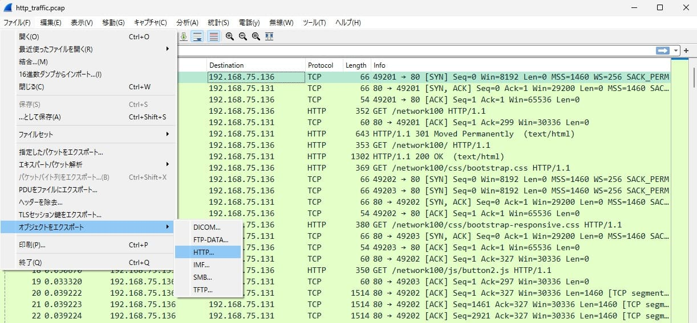

Level2 Write-ups
[Stego]隠されたフラグ
画像をダウンロードし拡大してみると画像の端にモールス信号が書かれており、これを翻訳したものがフラグになる。
[Web] Redirect
HTTPヘッダを確認する。
$ curl -I http://q15.ctf.cpaw.site
302でリダイレクトされていることがわかる。 ついでにフラグもわかる。
[Network+Forensic]HTTP Traffic
- ダウンロードしたpcapファイルをWiresharkで開く
- ファイル label> オブジェクトをエクスポート > HTTP 
- すべて保存し、適切なディレクトリにファイルを配置する
- ブラウザで保存したページを開き、ボタンを押すとフラグを得られる
[Recon]Who am I ?
Twitterアカウントを検索する。
[Forensic]leaf in forest
ダウンロードしたファイルをfileコマンドで調べると、pcap capture fileであることが分かるので、Wiresharkで読み込んでみるがうまく開けない。
バイナリエディタでファイルを開いて眺めていると、大量のlovelive!とその中に怪しい文字列が含まれていることが分かる。
目grepするか、文字列置換などしてフラグを抽出。
今回はlovelive!を空白に置換して残った文字列から拾ってフラグを取得。
もっとスマートな方法があるかもしれないけどわからない。
[Misc]Image!
ダウンロードしたzipをとりあえず解凍して中身をみてみるとLibreOfficeのファイルっぽいことがわかる。
LibreOfficeをインストールし、misc 100.zipをLibreOffice Writerで表示。
邪魔な四角のオブジェクトを取り除くとフラグを得られる。
[Crypto]Block Cipher
#include <stdio.h>
#include <stdlib.h>
#include <string.h>
int main(int argc, char* argv[]){
int i;
int j;
int key = atoi(argv[2]);
const char* flag = argv[1];
printf("cpaw{");
for(i = key - 1; i <= strlen(flag); i+=key) for(j = i; j>= i - key + 1; j--) printf("%c", flag[j]);
printf("}");
return 0;
}
- 実行時に引数を2つ受け取りそう
- ./a.out $flag $key
- flagは文字列でkeyは数字っぽい
- ./a.out $flag $key
- printf()に挟まれるループ文の中でフラグの文字列を生成してそう
for(i = key - 1; i <= strlen(flag); i+=key)
for(j = i; j>= i - key + 1; j--)
printf("%c", flag[j]);
keyに与えられた値で文字列を区切って、その文字列を後ろから1文字ずつ出力する処理をしている。
具体例
$ ./a.out ABCD 2のようにプログラムを実行したとする。
文字列ABCDを2文字ずつに区切ると、“AB”, “CD"となる。 それぞれを後ろから一文字ずつ出力すると、“BA”, “DC"となる。
今回の問題では、key=4で実行するとフラグを得ることができる。